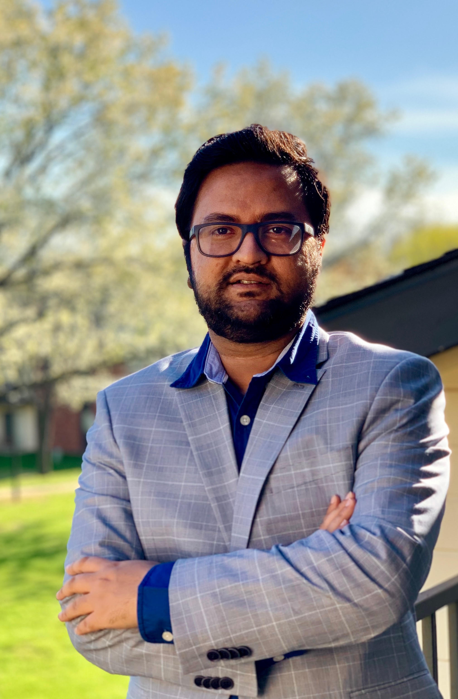

Khaza Anuarul Hoque

- Assistant Professor
- Department of EECS
- University of Missouri
- Office: Naka hall, Room 321
- Columbia, MO 65201, USA
- E-Mail: hoquek [at] missouri.edu
About Me
I am an Assistant Professor in the Electrical Engineering & Computer Science Department at University of Missouri (MU), Columbia, USA. I direct the Dependable Cyber-Physical Systems (DCPS) Laboratory at the University of Missouri-Columbia. Before joining MU, I was an FRQNT postdoctoral fellow at the University of Oxford, UK.
I am the recipient of the 2022 MU College of Engineering Junior Faculty Excellence in Teaching Award, 2016 Fonds de Recherche du Quebec-Nature et Technologies (FRQNT) Postdoctoral Fellowship Award, 2012 FRQNT Doctoral Research Award, 2011 IEEE International NEWCAS Conference Best Paper Award, and several other awards.
Research Interests
My research goal is to develop theory, methods, and tools to support the design, analysis, and formal verification of safe, secure, trustworthy, and energy-efficient AI hardware and cyber-physical systems by applying techniques from formal methods, cyber security, and machine learning. This allows me to conduct interdisciplinary research to answer the scientific questions I deem most important, specifically in a diverse set of application domains, such as edge intelligence, robotics, and virtual/augmented reality systems (VR).
Research Areas: Embedded Machine Learning and AI, Fault-Tolerant and Secure AI Hardware, Formal Methods & Cyber-Physical Systems.
News
| April'22 | We are attending Design, Automation and Test in Europe (DATE 2023) conference to present two papers from our lab. Here goes the Preprint version of Paper 1 and Paper 2. | March'23 | I am serving as an Associate Editor of the ACM Transactions on Probabilistic Machine Learning journal. | March'23 | Our paper on Hyperproperties for motion planning has been conditionally accepted in the IEEE Robotics and Automation Letters (RA-L) journal (IF 5.43) | January'23 | Our paper titled "Exposing Reliability Degradation and Mitigation in Approximate DNNs under Permanent Faults" has been accepted for publication in IEEE Transactions on Very Large Scale Integration (VLSI) Systems (IF 2.775). | January'23 | Our paper titled "VR-LENS: Super Learning-based Cybersickness Detection and Explainable AI-Guided Deployment in Virtual Reality " has been accepted for publication in ACM Conference on Intelligent User Interfaces (ACM IUI) (core rank A). | December'22 | Our paper titled "LiteVR: Interpretable and Lightweight Cybersickness Detection using Explainable AI" has been accepted for publication in IEEE Virtual Reality Conference (core rank A*). | November'22 | Two Papers from our lab have been accepted in the Design, Automation and Test in Europe (DATE 2023) conference titled "Improving Reliability of Spiking Neural Networks through Fault Aware Threshold Voltage Optimization" and "Security-Aware Approximate Spiking Neural Network". | October'22 | Our paper titled "Detection of Security and Privacy Attacks Disrupting User Immersive Experience in Virtual Reality Learning Environments" has been accepted for publication in the IEEE Transactions on Services Computing (IEEE TSC) Journal (IF 11.02). | Sept'22 | Our paper titled ‘TruVR: Trustworthy Cybersickness Detection using Explainable Machine Learning’ has been accepted for publication in the 21st IEEE International Symposium on Mixed and Augmented Reality (ISMAR 22) conference (core rank A*). | March'22 | I have been selected to receive the "Junior Faculty Excellence in Teaching" award from the College of Engineering, MU. | March'22 | Our paper titled ‘Runtime Monitoring of Time Window Temporal Logic’ has been accepted for publication in the IEEE Robotics and Automation Letters (RA-L) journal (IF 5.43). |
Publications
Activities
Technical Program Committee (TPC) Membership:
- Organizing Chair, the 14th Central Area Networking and Security Workshop (CANSec 2021)
- The 24th Design, Automation and Test in Europe Conference (DATE 2021)
- The 30th International Conference on Computer Communications and Networks (ICCCN 2021)
- The 58th ACM/ESDA/IEEE Design Automation Conference (DAC 2021)
- The 57th ACM/ESDA/IEEE Design Automation Conference (DAC 2020)
- The 56th ACM/ESDA/IEEE Design Automation Conference (DAC 2019)
- The 14th Annual IEEE International Systems Conference (SysCon 2020)
- The 13th Annual IEEE International Systems Conference (SysCon 2019)
- The 12th Annual IEEE International Systems Conference (SysCon 2018)
- The 6th IFIP International Conference on Computer Intelligence and Its Applications (CIIA2018)
- The 16th IEEE International NEW Circuits And Systems (NEWCAS 2018)
- The 15th IEEE International NEW Circuits And Systems (NEWCAS 2017)
- IEEE/ASME Transactions on Mechatronics
- IEEE Transactions on Information Forensics and Security
- Reliability Engineering and System Safety-Elsevier
- IEEE Transactions on Reliability
- IEEE Journal on Emerging and Selected Topics in Circuits and Systems
Khaza completed his Ph.D. in Electrical and Computer Engineering (Formal Verification) at Concordia University, Montreal, Canada in 2016. Previously at Concordia University he received his M.A.Sc. in Electrical and Computer Engineering with research in the same area. He also participated in the Space Studies Program (SSP - a graduate level professional development program) by International Space University (ISU) in 2014, supported by the ISU partial tuition scholarship.
During his Master and Ph.D., Khaza was supported by many institutional, provincial and international awards
including the prestigious FQRNT Doctoral Research Award from the Fonds de recherche du Québec - Nature et technologies, Canada. Khaza also worked as a Research Intern in Nuance Communication and Bombardier Aerospace in 2010 and 2013 respectively.
Khaza represented Bangladesh (2014-2016) in Space generation advisory council (SGAC) as the National Point of Contact (NPoC). SGAC has the observer status in United Nations Committee for Peaceful Use of Outer Space (UNCOPUOS). SGAC works on the international, national and local level to link together university students and young professionals to think creatively about international space policy issues. SGAC works as the voice of young space leaders to the UN.
Dependable Cyber-Physical Systems (DCPS) Laboratory
The research mission of Dependable Cyber-Physical Systems (DCPS) Laboratory is to develop theory, methods, and tools for supporting modeling, design, and (formal) verification of highly dependable Cyber-Physical Systems (CPS). Specifically, the goal of DCPS lab is to enhance the reliability, safety, and security of complex computing systems that are common in safety-critical and cost-critical domains such as aerospace, automotive and smart factory.
You can follow DCPS Lab updates via LinkedIn
Faculty:
- Prof. Khaza Anuarul Hoque
- Amjad Falih Hasan (Spring 2023-date)
- Ripan Kumar Kundu (Spring 2022-date)
- Ernest Bonnah (Spring 2020-date)
- Ayesha Siddique (Spring 2020-date)
- Prachi Tripathi (M.Sc. Project student, Spring 2021-date)
- Shadid Shakhawat (Rock Bridge High School, Fall 2021-date)
- Gautam Mode (M.Sc. student, Fall 2018-Fall 2020).
- Samaikya Valluripally (Ph.D. student, Fall 2018-Fall 2020, co-mentored with Dr. Calyam). Current position: Senior Product Security Engineer, Intel, Hillsboro, OR.
- Ahmet Soyyigit (Visiting researcher, Fall 2019). Current position: Ph.D. student at the University of Kansas
- Aniket Gulhane (M.Sc. student, Fall 2018-Fall 2019, co-mentored with Dr. Calyam). Current position: Software developer at Paycom Software, Inc.
- Terrell Pickens (Ungergraduate research intern, Summer 2019). Current position: Senior undergradaute student at the Lincoln University, MO.

Prospective Students
Ph.D. Research/Teaching Assistantship (RA/TA) in formal verification
Funded Ph.D. positions are available for Fall 2020 in EECS department at the University of Missouri, Columbia, USA under the supervision of Dr. Khaza Anuarul Hoque. The research project will focus on the development of formal verification based techniques for designing dependable and safe cyber-physical systems.
Established in 1849, the University of Missouri College of Engineering’s excellence includes nine disciplines, 130 faculty members, more than 3,300 of the brightest undergraduates on campus and more than 600 exceptional graduate students at the flagship campus of the UM System. Electrical engineering at MU was established in 1884 – the first electrical engineering program in the nation. Located in the heart of Missouri, the College of Engineering at Mizzou operates the University of Missouri Research Reactor, the most powerful nuclear research reactor on a university campus nationwide.
Successful candidates will receive financial support as Research/Teaching Assistants (RAs/TAs), and will also be awarded full tuition waiver. Candidates with expertise in one or more of the following priority areas are especially encouraged to apply.
Requirements:
- Excellent academic results in B.Sc/M.Sc. with major in computer science/electrical engineering. The exact admission requirements are available here.
- Strong background in mathematics (e.g. stochastic modeling, Markov chain) is required. Knowledge of formal verification/automata theory (especially, model checking) will be counted as a strong plus, but not mandatory.
- Strong programming skills (C/C++, Python) is required. Good understanding of graph theory, dynamic programming, machine learning and optimization techniques are also mandatory.
Note: Due to large volume of emails, I cannot reply to every email, but I will do my best to reply to competitive applicants.
Teaching
University of Missouri - Columbia
Hardware Formal Verification (ECE 8001: Fall 2021)
VHDL & Programmable Logic Controllers (ECE 4250/7250: Fall 2021)
VHDL & Programmable Logic Controllers (ECE 4250/7250: Spring 2021)
VHDL & Programmable Logic Controllers (ECE 4250/7250: Fall 2020)
VHDL & Programmable Logic Controllers (ECE 4250/7250: Spring 2020)
VHDL & Programmable Logic Controllers (ECE 4250/7250: Fall 2019)
VHDL & Programmable Logic Controllers (ECE 4250/7250: Spring 2019)
VHDL & Programmable Logic Controllers (ECE 4250/7250: Fall 2018)
VHDL & Programmable Logic Controllers (ECE 4250/7250: Spring 2018)
Honors and Awards
- FQRNT Postdoctoral Fellowship Award, Fonds de Recherche du Qubec - Nature et Technologies (FQRNT), Canada, 2016-2018.
- Concordia Accelerator Award, Concordia University, 2015.
- ISU SSP Scholarship from International Space University to attend Space Studies Program (SSP), France, 2014.
- FQRNT Doctoral Research Award, Fonds de Recherche du Qubec - Nature et Technologies (FQRNT), Canada, 2012.
- Deans Funding for Graduate Students, Concordia University (2011- 2014 and 2008-2010), Canada.
- Financial Support for Conference Participants, Microsystems Strategic Alliance of Qubec (ReSMiQ), 2013, 2014, 2015.
- Concordia University Conference and Exposition Award, School of Graduate Studies, Concordia University, 2013, 2014, 2015.
- ENCS Conference Support, Faculty of Engineering and Computer Science, Concordia University, 2013.
- Best Paper Award for outstanding contribution from 8th IEEE International NEWCAS Conference, Canada, 2011.
- Student Travel Award, NASA Lunar Science Forum, NASA Ames Research Center, USA, 2010.
- ReSMiQ Scholarship forMaster Students, Microsystems Strategic Alliance of Quebec (ReSMiQ), Canada, 2010.
- ReSMiQ Scholarship for Master Students from Microsystems Strategic Alliance of Quebec (ReSMiQ), Canada, 2009.